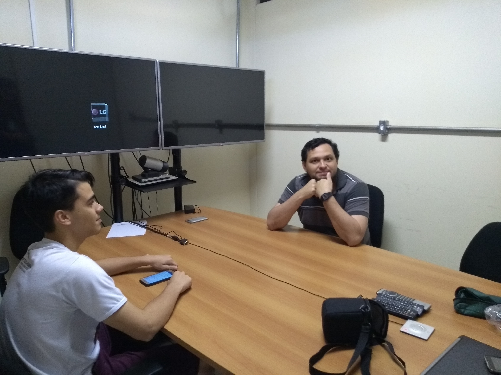
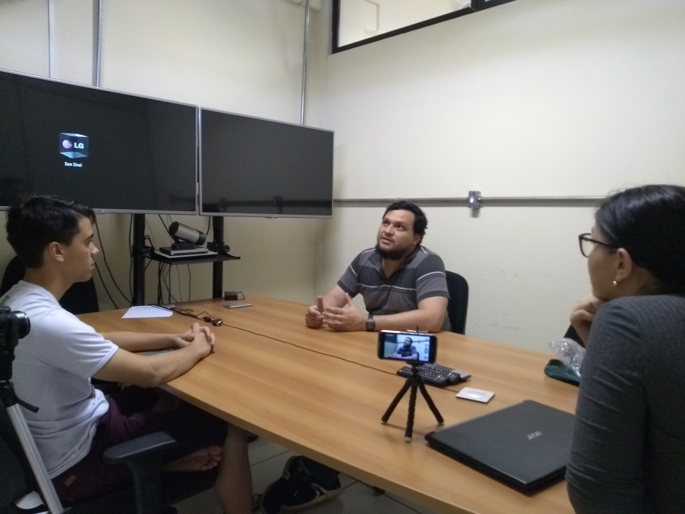
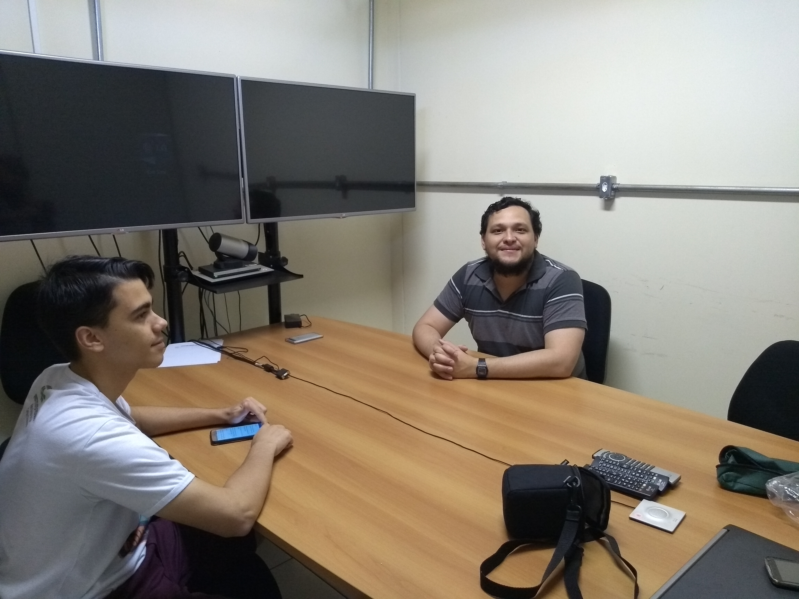
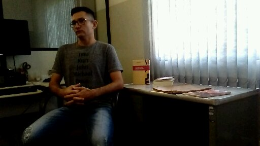

Home
Bibliografia
Portifólio
Projeto
Portifólio
Fotos do Projeto




Fotos do
Centro de Docmunetação regional


![Descrição do CDR: Na foto aparece a Rua Bahia. Há um depósito de gás à direita da foto. A frente, o prédio da Marini Materiais para Construção e, mais á frente, o prédio do Madeiral. No lado esquerdo da foto, aparece a Bertolotto, a vidraçaria União e vários outros prédios, como também casas. Abaixo, um semáforo e um motociclista, vestindo calça e camisa. Na rua, na mão direita, tem um carro branco, um pequeno caminhão, e outros carros ao fundo. A esquerda, na rua, uma Toyota e uma caminhonete estacionada embaixo de uma árvore. Obs Rua Bahia, esquina com a Joaquim Teixeira Alves](img/portifolio/11.png)